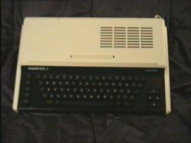

ELWRO
ELWRO. Polska... Moja babiczka pochazi z Chrzanova...
Jesieni± 1985. grupa naukowców z Instytutu Automatyki Politechniki Poznañskiej wynalaz³a
(u Sinclaira na strychu) komputer, nazwany pó¼niej Elwro 800 Junior. Produkowano go
we Wroc³awiu na zamówienie Ministerstwa O¶wiaty i Wychowania. Obudowa by³a adaptowana
z organów-zabawki, st±d te dziwaczne pantografy do nut. W 1986r. planowana produkcja mia³a
wynie¶æ...500 (s³ownie: piêæset) sztuk. Dziennikarz z Bajtka siê piekli³, ¿e Elwro bierze
napêdy dyskowe z Wêgier i NRD, a krakowska Mera-KFAP robi ju¿ w³asne. Te¿ 500 sztuk rocznie...
Ale moi synowie uczyli siê na Juniorach informatyki w ¶redniej szkole na pocz±tku lat
90-tych.
800 Junior

Procesor Z80 / 3,5MHz.
RAM 64kB
ROM 24kB
Procesor graficzny: brak.
Rozdzielczo¶æ maksymalna: 256 X 192.
Grafika: 8 kolorów o dwóch poziomach jasno¶ci ka¿dy.
Tryby tekstowe 32 kolumny w 24 wierszach
Wyj¶cie video: RF modulator, monitor PAL.
Porty: magnetofonu, drukarki, sieæ Junet, FDD, d¿ojstik.
Zewnêtrzne peryferia: magnetofon, drukarka, FDD.
D¼wiêk: jednokana³owy. Wbudowany g³o¶nik.
|